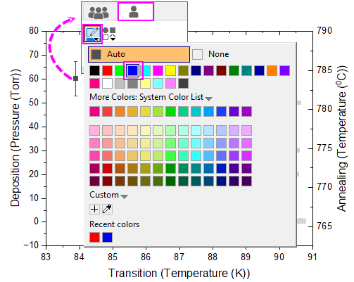

Diagramme mit doppeltem Y
Double-Y
Zusammenfassung
Dieses Tutorial zeigt, wie ein Diagramm mit doppelter Y-Achse in nur einem Layer erstellt wird.

Origin-Version mind. erforderlich: Origin 2023
Was Sie lernen werden
- Ein Diagramm mit doppelter Y-Achse erstellen
- Punktdiagramme benutzerdefiniert anpassen
- Achsenskalierung ändern
Schritte
In diesem Tutorial wird das Projekt \Samples\Graphing\Double-Y.opj verwendet.
Methode 1: Verwenden der Standardvorlage Doppeltes Y
- Öffnen Sie das Projekt <Origin-Installationsverzeichnis>\Samples\Graphing\Double-Y.opj und aktivieren Sie die Arbeitsmappe.
- Markieren Sie vier Datenspalten im Arbeitsblatt und wählen Sie dann im Menü Zeichnen > Mehrere Felder/Achsen: Doppelte Y-Achse, um ein Diagramm mit doppelter Y-Achse zu erstellen.
- Klicken Sie auf die Zeichnung und dann auf der Minisymbolleiste auf die Schaltfläche Diagramm ändern in und wählen Sie Punkt aus, um den Diagrammtyp für alle Zeichnungen zu ändern.
- Klicken Sie auf einen der Punkte der zweiten Zeichnung und wechseln Sie zur Registerkarte Einzelne Zeichnung. Setzen Sie die Farbe auf Blau.
- 
- Klicken Sie auf die untere X-Achse und dann auf der Minisymbolleiste auf die Schaltfläche Achsenskalierung, um den Dialog Achsenskalierung zu öffnen. Legen Sie dort die Achsenskalierung für die untere X, linke Y und rechte Y fest.
- Das erzeugte Diagramm sieht folgendermaßen aus:
Methode 2: Hinzufügen des rechten Y zum Diagramm mit linkem Y
- Markieren Sie vier Spalten der Daten im Arbeitsblatt und wählen Sie dann im Menü Zeichnen: Einfache 2D: Punktdiagramm, um ein Punktdiagramm zu erstellen.

- Klicken Sie zum Öffnen des Dialogs Details Zeichnung doppelt auf das Punktdiagramm. Wählen Sie die zweite Zeichnung im linken Bedienfeld und gehen Sie zur Registerkarte Anzeige. Wählen Sie die Rechte Y-Achse, um sie gegen die rechte Y-Achse zu zeichnen. Hinweis: Sie können auch die Objektverwaltung verwenden, um eine Zeichnung zu einer rechten Y-Achse zuzuweisen, wie hier beschrieben.
- Klicken Sie auf die zweite Zeichnung und ändern Sie auf der Minisymbolleiste die Symbolfarbe in Blau. Ändern Sie die Symbolform in Quadrat.

- Klicken Sie auf den weißen Bereich des aktuellen Layerrahmens in der Minisymbolleiste.
- Legen Sie die Achsenskalierung wie in Schritt 5 von Methode 1 fest.
- Sie erhalten das gleiche Diagramm wie mit Methode 1.